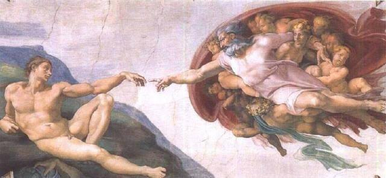

The Story of Art · A Digital Reading Museum
E. H. 贡布里希 · 范景中 译 · 三联版
一座可以长期居住的西方艺术史博物馆。沿着原著二十八章的叙述，从洞窟壁画走到二十世纪的实验——二十八章全部写完：正文、图版展签、艺术家档案齐备，可按章读，也可按图看。
酒红色引文块中的文字，逐字照录三联版（广西美术出版社，2008）范景中译本，标明所属章节。不增删、不改写。
其余正文由本站独立撰写，用于补足历史背景、形式分析与前后脉络。凡属补充材料，均在文中标明「编者」。
全部图版取自本书插图，保留原书图号（图186—图207），可与纸书对照。本站不声称拥有任何作品的著作权。
Chronology
章名与副题照录原著目录；分卷分组与年代区间为编者所加，便于导航。标记「精读」的两章（15、16）含原著逐字引文与逐段分析；其余二十六章为导读，每章约千五百字。
Now Reading
先写完一章，再开下一章。二十八章现在全部写完：每章有历史背景、风格分析、作品细读与前后时代的关联，不写只有三句简介的空壳。
Periods
六个编者分组，对应原著二十八章的推进顺序。点击进入该组第一章。
Artists
重点人物的独立档案。灰色者为计划中，尚未撰写，不提供空壳页面。
Plates
点击任意图版进入放大查看；滚轮缩放，拖动平移。